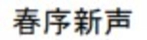
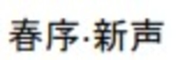

Trade Mark Journal No.2025/049 5 December 2025
UK00004270215 27 September 2025 (9,16,35,41)
Mark 1

Mark 2

- Class 9
- Recordings, digital music files, videos. ; electronics；software；computers；audiovisual products; Music recordings; Music headphones; Music cassettes; Music software; Music tapes; Downloadable music sound recordings; Prerecorded music videos; Digital music players; Tape recordings of music; Pre-recorded CDs featuring music; Downloadable digital music; Audio tapes featuring music; Electronic sheet music, downloadable; Portable music players; Musical video recordings; Phonograph records featuring music; Prerecorded music audio tapes; Downloadable video recordings featuring music; Downloadable music files; Downloadable musical sound recordings; Pre-recorded audio cassettes featuring music; Digital music downloadable from the Internet; Musical recordings; Pre-recorded DVDs featuring music; Musical sound recordings; Prerecorded video cassettes featuring music; Prerecorded audio tapes featuring music; Docking stations for digital music players; Prerecorded video tapes featuring music; Pre-recorded video tapes featuring music; Computer software for creating and editing music and sounds; Optical discs featuring music; Pre-recorded laser discs featuring music; Series of musical sound recordings; Musical cassettes; Downloadable posters; Picture projectors; Bulletin boards (Illuminated -); Vests (Am.) Bullet-proof ; Ph meters; Three dimensional viewers; Digital pH meters; Point Of Sale [POS] systems; Volt metres; PC mice; PH electrodes; 3D television receivers; 3D Scanners; Volt meters; Step up transformers; X-Y plotters; Books recorded on disc; 3D glasses; Books recorded on tape; Bullet-proof vests (Am.); Tee squares [measuring]; System on a Chip [SoC]; Humidity meters; Ampere-hour meters; Graduated rulers; System on Chip [SOC]; Math coprocessor; Engine hour meters; Time division multiplexers.
- Class 16
- Pen; Printed matter, programs, sheet music. ; Music books; Sheet music; Music magazines; Music scores; Music sheets; Printed music; Music note books; Music in sheet form; Printed music books; Instruction manuals for music synthesizers; Printed sheet music; Printed books in the field of music education; Posters; Poster books; Poster magazines; Advertising posters; Mounted posters; Posters made of paper; Advertisement boards of paper or cardboard; Advertisement boards of cardboard; Advertisement boards of paper; Printed advertising boards of cardboard; Printed advertising boards of paper; Picture postcards; Advertising signs of paper or cardboard; Picture framing mat boards; Postcard paper; Printed flyers; Postcards and picture postcards; Printed informational flyers; Display banners of paper; Photo prints; Cartoon prints; Advertisement boards of card; Paper banners; Banners of paper; Placards of paper or cardboard; Illustration boards; Advertising signs of paper; Placards of paper; Graphic prints; Graphic art prints; Advertising signs of cardboard; Printed paper signs; Paintings [pictures], framed or unframed; Placards of cardboard; Flyers; Paper picture mounts; Drawing boards [painters' article]; Cardboard picture mounts; Printed cardboard invitations; Signboards of paper or cardboard; Printed paper signs featuring names for use for special events; Printed brochures; Printed paper signs featuring table numbers for use for special events; Display banners made of cardboard; Printed art reproductions; Printed visuals; Printed advertisements; Informational flyers; Graphic art reproductions; Advertising pamphlets; Printed leaflets; Clip boards; Book-cover paper; Paper board; Picture books; Printed paper invitations; Graphic reproductions; Reproductions (Graphic -); Printed promotional material; Printed cartoon strips; 3D wall art made of paper; Art paper; Art prints; Graphic prints and representations; Pictorial prints; Paper for printing photographs; Printed pamphlets; Printed paper labels; Art pictures; Photographs [printed]; Printed photographs; Printed answer sheets; Wallpaper sample book; Labels of paper or cardboard; Printed informational sheets; Paper signboards; Picture cards; 3D decals for use on any surface; Three-dimensional decalcomanias for use on any surface; Year planners; Till rolls; School yearbooks; School writing books; School photographs; School cones, empty.
- Class 35
- Online retail services for downloadable and pre-recorded music and movies; Promotion of musical concerts; Design of advertising flyers; Banner advertising; Advertising flyer distribution; Distribution of printed promotional material by post; Advertising for motion picture films; Dissemination of advertising material [leaflets, brochure and printed matter]; Advertising flyer distribution for others; Dissemination of advertisements and of advertising material [flyers, brochures, leaflets and samples]; Design of advertising brochures; Publicity brochure distribution; Distribution of flyers, brochures, printed matter and samples for advertising purposes; Cinematographic film advertising; Dissemination of advertising material [leaflets, brochures and printed matter]; Electronic billboard advertising; Distribution of advertising material by post; Handbill distribution; Rental of billboards [advertising boards]; Rental of advertisement billboards; Advertisement billboards (Rental of -); School fee cost accounting services; School fee accounting services; Book club services retailing books to its members.
- Class 41
- Music publishing and music recording services; Music performances; Jazz music entertainment services; Production of music concerts; Music education; Presentation of music concerts; Live music concerts; Pop music concerts (Organisation of -); Performance of music; Production of music; Music production; Music concert services; Teaching of music; Music publishing; Publishing of music; Performance of music and singing; Tuition in music; Organisation of music concerts; Production of sound and music recordings; Music festival services; Instruction in music; Music instruction; Performing of music and singing; Performance of dance, music and drama; Live music performances; Music entertainment services; Arranging of music performances; Music composition services; Direction of music performances; Organising of festivals relating to jazz music; Composition of music for others; Music composition for others; Music recording studio services; Live music services; Rental of phonographic and music recordings; Music mixing services; Live music shows; Production of music shows; Artistic management of music venues; Arranging of music shows; Music cassettes (Rental of -); Tuition in music appreciation; Music library services; Music group services; Music performance services; Music production services; Publication of sheet music; Music publishing services; Provision of live music; Music transcription for others; Musical concerts by radio; Arranging and conducting of music concerts; Musical entertainment; Music competition services; Live musical concerts; Publication of music books; Providing digital music from the internet; Music transcription services; Entertainment in the nature of live performances by musical bands; Presentation of musical concerts; Musical concerts by television; Education and training in the field of music and entertainment; Selection and compilation of pre-recorded music for broadcasting by others; Sound recording and video entertainment services; Entertainment in the form of recorded music (Services providing -); Musical concert services; Arranging of musical entertainment; Entertainment in the nature of dance performances; Production of musical recordings; Entertainment in the nature of live dance performances; Publication of posters; Presentation of films; Exhibition of video films; Movie showing; Movie theater presentations; Movie theatre presentations; Showing of cinematographic and motion picture films; Motion picture film production; Teaching at junior high schools; Singing classes; Educating at senior high schools; Conducting of classes; Arranging of classes; Conducting classes in weight reduction; Conducting distance learning instruction at the college level; Education services in the nature of courses at the university level; Conducting distance learning instruction at the graduate level; Providing courses of instruction at post-graduate level; Conducting distance learning instruction at the university level; Production of course material distributed at vocational lectures; Academic mentoring of school age children; Organisation of examinations to grade level of achievement; Educating at university or colleges; Conducting distance learning instruction at the primary level; Production of course material distributed at professional lectures; Conducting distance learning instruction at the secondary level; Arranging and conducting of day school courses for adults; Production of course material distributed at vocational courses; Conducting physical fitness conditioning classes; Production of course material distributed at professional courses; Production of course material distributed at vocational seminars; School services for the teaching of languages; Production of course material distributed at management lectures; Educational services provided by senior high schools; Boarding school education; Ballet schools; Production of course material distributed at professional seminars; Pilates instruction; Production of course material distributed at management courses; Teaching by correspondence courses; School services for the teaching of construction draughting; Pre-school teaching; Production of course material distributed at management seminars; Arranging and conducting of classes; Dance schools; School services; Dance instruction for adults; Tuition in gymnastics; Teaching in the field of remedial reading; Music tuition by correspondence courses; Producing and conducting exercises for music classes and programmes; Tuition in oenology; Education academy services for teaching art history; Training of swimming teachers; Record master production; Education academy services for teaching languages; Conducting of instructional, educational and training courses for young people and adults; Teaching academy services; Presentation of live performances by a musical group; Entertainment services provided at a race track; Publication of music; Ballet classes; Linguistic classes; Gym activity classes; Teaching at elementary schools; Exercise classes; Providing courses of instruction at high school level; Tutoring at cram schools; Provision of dance classes; Providing courses of instruction at college level; Conducting fitness classes; Exercise and fitness classes; Conducting classes in nutrition; Conducting classes in exercise; Conducting classes in weight control; School services for the teaching of art; Ballet lessons; Boarding school services; Instruction in ballet; Aerobics competitions; Yoga instruction.
Xinyi Guo